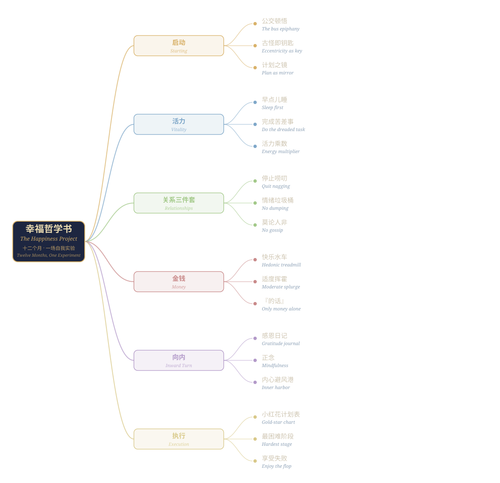

幸福哲学书
〇 · 书籍信息
基本信息
| 书名 | 「幸福哲学书」的关键词是「计划」——「『幸福计划』是一场能够改变你的人生的旅程。首先是准备阶段……其次是制订行动计划的阶段……最后是最有趣也最困难的阶段：执行你的行动计划」——幸福不是状态，是一个项目 |
|---|---|
| 作者 | 格雷琴·鲁宾（Gretchen Rubin）——「我开始幸福感研究，写一本关于幸福的书」：耶鲁法学背景的畅销作家——用图表、行动清单、月度主题把幸福做成可执行的实验，「大概少不了图表、预期结果、行动列表、新的术语和强迫症似的记笔记」 |
| 结构 | 12 章 = 12 个月：1 月让自己活力满满（早点睡/多锻炼/清理/完成苦差）→ 2 月婚姻（停止唠叨/不当情绪垃圾桶）→ 3 月职业 → 4 月育儿 → 5 月玩乐 → 6 月友谊 → 7 月金钱 → 8 月感恩 → 9 月激情 → 10 月正念 → 11 月知足 → 12 月悦人先悦己（执行所有计划） |
| 一句话 | 「每个人都是古怪的，因此每个人的幸福计划都应该有所不同」——幸福没有标准答案，但幸福的方法论有：看见什么带给你喜悦，什么带给你愧疚，然后把前者排进日程。 |
一 · 核心主题总览
这本幸福实验里的四组母题：① 幸福悖论
开篇就交代内心的矛盾：「尽管在思考幸福时，我仍在和一种悖论感做斗争：我想要改变自己又想要接受自己。我不想过分关注自己，又觉得应该认真对待自己。我想要更好地利用时间，又想闲逛、游玩，放任自己去读一些奇奇怪怪的书」——幸福计划的起点不是乐观，是承认这组张力：改变与接纳、自律与放松，永远在互相谈判。
② 快乐水车
第七章谈金钱时给出全书最硬的概念：「人的适应性很强。我们能很快地调整自己以适应新的环境——不论新环境是好还是坏……所谓『快乐水车』（hedonic treadmill）现象，或享乐适应症现象，就是指这种人们会很快习惯于那些原本令人『感觉好』的事情，比如新的车、新的职称或者新的空调。习惯让好的感觉消耗殆尽」——对策不在少花钱，在换品类：「你可能很快就把新餐桌不当回事了，但是打理花园会在每个春天给你带来新的乐趣和惊喜」——买消耗型快乐不如买成长型快乐。
③ 金钱的诚实
作者拒绝流行口号：「我对于自己所读的大多数相关文献保持怀疑态度，具体是指『金钱不能购置快乐』这个论点」——「研究证明，事实上生活在富裕国家的人民比生活在贫穷国家的人民更幸福……当国家变得更富裕，人们会逐步减少对基本生理及经济需求满足的关注，而更多地转向关注精神需求」——但最终答案很干净：「金钱能买到快乐吗？我的答案是：『不能。』这很明确，只有金钱的话是不能买到快乐的」——金钱是必要条件不是充分条件。
④ 做自己需要方法
妹妹的评语是全书的暗线：「你可能并没有意识到自己有多古怪。但是，我觉得这是个好主意」——「每个人都是古怪的，因此每个人的幸福计划都应该有所不同。每个人都是与众不同的」——「常言说，人们会教他们自己需要学习的东西。我决定做自己的幸福计划的老师」——幸福计划的价值一半在结果，一半在「计划本身是一面镜子：它暴露出许多关于你的事情，比你意识到的要多」。
二 · 第一段 起点与活力 —— 幸福计划的开工—— 公交车上的顿悟 · 1 月清单 ——
公交车上的顿悟
计划的缘起是一个日常瞬间：「公交车几乎没有移动，而我却很难跟上我自己的想法。『我必须处理这些想法，』我告诉自己，『一旦我有空闲，我就要制订一个幸福计划。』但我从来没有闲下来过。当生活开始步入正轨，你就很难再想起什么是真正重要的」——顿悟的结论很扎心：等「有空」永远不会开始，幸福必须挤进日程；于是她给妹妹打电话，妹妹说：「你可能并没有意识到自己有多古怪。但是，我觉得这是个好主意」。
◆ 语言学习 · 概念 · 启动条件
| 从来没有闲下来过 | 「等有空」的破产：幸福不会被日程外的时间施舍 |
|---|---|
| 电话测试 | 把计划说给别人听：第一个外部校验 |
| 古怪 | 自我认知的入口：计划暴露真实的偏好 |
| 12 个具体目标 | 月度主题法：一年十二格棋盘 |
句型 ｜ 「当生活开始步入正轨，你就很难再想起什么是真正重要的。」——启动时刻的判词：「步入正轨」恰恰是危机：顺滑的生活会钝化价值感——幸福计划是对钝感的自救。
1 月：让自己活力满满
第一个月的清单最朴素也最科学：「早点儿睡／多锻炼／经常清理，保持整洁／完成一件苦差事」——作者深知 Energize 的机理：睡眠、运动、整洁、清账，都是「体感」投资；她也清醒于大众文化的另一面：「大众文化充满了对清除杂乱的讨论……他们会『为了获得内心的满足而花钱』。显然，他们相信物质环境会影响精神幸福」——她的立场是：不迷信整理术，但承认环境与情绪的真实相关——活力是幸福的乘数：一月的四条动作不直接产生快乐，却提高其余十一月的快乐效率。
◆ 语言学习 · 概念 · 活力乘数
| 早点儿睡 | 睡眠先行：情绪的地基 |
|---|---|
| 完成一件苦差事 | 清账效应：拖着的事最耗心力 |
| 加州衣柜 | 大众整理文化的符号：作者既用又不迷信 |
| 乘数 | 活力的定位：不产生快乐，放大快乐 |
习语 ｜ 「完成一件苦差事。」——一月清单的暗桩：拖着不做的事比做它本身更耗人——幸福计划的第一个红利不是快乐，是卸下沉重的「待办」。
三 · 第二段 关系三件套 —— 婚姻 · 育儿 · 友谊—— 停止唠叨 · 早起唱歌 · 莫论人非 ——
婚姻：从「改对方」到「改自己」
2 月清单是全书最有反差感的：「停止唠叨／不要总是期待爱人的赞美／用正确的方式争吵／不要当对方是情绪垃圾桶」——四条动作的共同点：全部是「改自己」而不是「改对方」——停止唠叨是管住自己的嘴，不期待赞美是管住自己的心，「不当情绪垃圾桶」是管住自己的发泄口——幸福计划在关系上的精髓：把「他为什么不改」的精力，全部转投「我可以怎么改」。
◆ 语言学习 · 概念 · 关系内控
| 停止唠叨 | 第一条军规：唠叨换不来改变，只换来疲惫 |
|---|---|
| 正确的争吵 | 冲突管理：吵可以，吵法有讲究 |
| 情绪垃圾桶 | 单向倾倒：关系失衡的信号 |
| 不期待赞美 | 去除隐性交易：付出不必计价 |
句型 ｜ 「不要当对方是情绪垃圾桶。」——2 月最狠的一条：亲密关系里最隐蔽的消耗，是把单向发泄当沟通——幸福计划把它点名为「垃圾桶」，让双方都能看见。
育儿与友谊：把时间变成仪式
4 月与 6 月是一对：育儿清单「早起唱首歌／关注孩子的情绪／和孩子度过更多温馨美好的时光／别急，慢慢来」；友谊清单「记得朋友的生日／慷慨助人／多多聚会／莫论人非」——两份清单的共同设计：把善意变成具体动作（唱歌、记生日、聚会），因为「幸福最重要的元素之一就是社会联系」——作者定 12 目标时的原话：「根据我之前的研究成果，幸福最重要的元素之一就是社会联系，所以我将『婚姻』『做父母』和『友谊』列为三个具体目标」——关系三件套占了十二格中的三格：幸福的地基是人际。
◆ 语言学习 · 概念 · 社会联系
| 早起唱首歌 | 微仪式：一天从好脾气开始 |
|---|---|
| 记得生日 | 善意的外化：关怀需要日历 |
| 莫论人非 | 友谊的止损线：八卦是复利负债 |
| 社会联系 | 幸福研究的第一变量：三格给了它 |
习语 ｜ 「幸福最重要的元素之一就是社会联系。」——研究结论的朴素版：幸福学 literature 万千，落到操作层就三格：婚姻、育儿、友谊——把抽象的「联系」排进日程，是全书最有用的翻译。
四 · 第三段 金钱 · 正念 · 知足 —— 向内收官—— 快乐水车 · 感恩日记 · 悦人先悦己 ——
金钱的诚实账
7 月「体验花钱的快乐」的清单：「适度挥霍／切勿过度消费／该花就花／学会放弃」——四条合起来是一套「花钱伦理」：挥霍被允许（适度），囤积被禁止（过度），该花就花（别为省钱牺牲体验），学会放弃（有些东西买了反而不快乐）——配合「快乐水车」的机制分析：「习惯让好的感觉消耗殆尽」——结论是买「成长型快乐」：「打理花园会在每个春天给你带来新的乐趣和惊喜」——金钱观的最后一句是诚实的让步：「只有金钱的话是不能买到快乐的」——『的话』两个字，承认了金钱的贡献，划清了金钱的边界。
◆ 语言学习 · 概念 · 花钱伦理
| 适度挥霍 | 被允许的快乐：预算内的放纵 |
|---|---|
| 该花就花 | 别为省钱牺牲体验：守财奴的隐性成本 |
| 成长型快乐 | 花园式消费：每个春天都有新乐趣 |
| 『的话』 | 金钱论的精确措辞：承认贡献，划清边界 |
句型 ｜ 「只有金钱的话是不能买到快乐的。」——金钱章节的判词：两个字的修饰（「的话」）是全书最精确的措辞——反金钱拜物教，但不反金钱。
向内的三课与终局
8—11 月转向内心：「8 月拥有感恩之心：阅读有关灾难的书籍／记感恩日记／找到自己的精神导师」——10 月「用正念提升专注力：重新审视『人生原则』／跳出固有的思维模式／记饮食日记」——11 月「知足常乐：放声大笑／友善待人／宽容大度／找到内心的避风港」——12 月是终局：「我准备尝试幸福训练营，同时执行我所有的行动计划。我只想看见小红花贴满我的计划表，除此之外什么也不想。这个完美的目标令人望而生畏」——十二个月的结尾坦诚：执行才是「最有趣也最困难的阶段」，小红花不会自动贴满——幸福计划的真正成果，是让「知道」变成「做到」的那张计划表。
◆ 语言学习 · 概念 · 训练营
| 感恩日记 | 最低成本的正念：每天三行 |
|---|---|
| 读灾难书 | 感恩的负向技巧：对照产生知足 |
| 内心的避风港 | 知足的物理锚点：一个能回去的地方 |
| 小红花计划表 | 终局的真相：执行比计划难 |
习语 ｜ 「最后是最有趣也最困难的阶段：执行你的行动计划。」——致读者的伏笔在 12 月兑现：所有方法论书籍的同一终点——知道与做到之间隔着十二个月的红花贴纸。
五 · 人物图鉴与成长弧线—— 主角配角 · 一张表看穿 ——
主要人物
格雷琴·鲁宾——幸福计划的实验者——「我决定做自己的幸福计划的老师」：图表、行动列表、月度主题——把幸福做成可执行的项目管理
伊丽莎白——妹妹与第一位读者——「你可能并没有意识到自己有多古怪。但是，我觉得这是个好主意」：计划的第一面镜子
塞缪尔·约翰逊——扉页引言的智者——「谁要把印度的财宝带回家，谁就必须随身携带这些财宝」：幸福带不回，只能自己挣
罗伯特·路易斯·史蒂文森——第二句引言——「没有哪一种责任像幸福的责任一样被我们低估」：幸福是被低估的责任
次要人物（功能位）
| 杰米·鲍斯威尔 | 《约翰逊传》作者——扉页引文的出处：传记家的引线 |
|---|---|
| 穆勒与边沁一系 | 幸福学研究的远亲——「最大幸福原理」式功利主义是作者大量阅读的背景板 |
| 赫芬顿邮报 | 博客的放大器——「我被邀请为异常受欢迎的赫芬顿邮报博客写文章」：三月职业目标的战果 |
| 生活骇客 | 博客平台的分享者——「生活骇客（Lifehacker）、生活黑客分享网……开始被很多博客平台分享转载」：实验的传播链 |
六 · 主题与象征—— 每个道具都在说话 ——
| 公交车 ↔ 顿悟 | 启动时刻——「从来没有闲下来过」：幸福不会被日程外的时间施舍 |
|---|---|
| 小红花 ↔ 执行 | 终局意象——「我只想看见小红花贴满我的计划表」：知道与做到的距离 |
| 快乐水车 ↔ 适应 | 享乐机制——新车、职称、空调都会被习惯：好感觉会被消耗殆尽 |
| 花园 ↔ 成长型快乐 | 消费选择——「每个春天给你带来新的乐趣」：买会更新的快乐 |
| 镜子 ↔ 计划 | 自我暴露——「你的幸福计划暴露出了许多关于你的事情」：计划是照见自己的工具 |
七 · 写作手法赏析—— 怎么写，就能怎么学 ——
① 月度主题法
12 章＝12 个月——时间天然分格：一个主题一个月，符合注意力周期
② 动作清单化
每月四条左右具体动作——「早点儿睡」「停止唠叨」：可执行性是幸福计划的底线
③ 自我实验叙事
每条动作都有尝试记录与失败记录——「享受失败的乐趣」也是清单项：实验允许失败
④ 引言立框
约翰逊与史蒂文森两句压卷——「随身携带这些财宝」「幸福的责任被低估」：主题先行
⑤ 诚实的悖论
开篇即承认矛盾——「我想要改变自己又想要接受自己」：不装全知，实验者的体面是坦白
八 · 名段欣赏—— 原文精读 · 逐段赏析 ——
九 · 金句摘录—— 14 条 · 中英对照 · 带出处 ——
"「幸福计划」是一场能够改变你的人生的旅程。首先是准备阶段……最后是最有趣也最困难的阶段：执行你的行动计划。"—— 致读者
"当生活开始步入正轨，你就很难再想起什么是真正重要的。"—— 序章 · 公交车上的顿悟
"你可能并没有意识到自己有多古怪。但是，我觉得这是个好主意。"—— 妹妹伊丽莎白
"每个人都是古怪的，因此每个人的幸福计划都应该有所不同。每个人都是与众不同的。"—— 第一章
"我想要改变自己又想要接受自己。我不想过分关注自己，又觉得应该认真对待自己。"—— 第一章 · 悖论
"常言说，人们会教他们自己需要学习的东西。我决定做自己的幸福计划的老师。"—— 第一章
"根据我之前的研究成果，幸福最重要的元素之一就是社会联系，所以我将「婚姻」「做父母」和「友谊」列为三个具体目标。"—— 第一章 · 定目标
"所谓「快乐水车」（hedonic treadmill）现象……就是指这种人们会很快习惯于那些原本令人「感觉好」的事情。习惯让好的感觉消耗殆尽。"—— 第七章
"你可能很快就把新餐桌不当回事了，但是打理花园会在每个春天给你带来新的乐趣和惊喜。"—— 第七章
"「金钱能买到快乐吗？」我的答案是：「不能。」这很明确，只有金钱的话是不能买到快乐的。"—— 第七章
"研究证明，事实上生活在富裕国家的人民比生活在贫穷国家的人民更幸福、更快乐。"—— 第七章
"敢于冒着失败的风险行动也让我获得了一些成功的机会。"—— 第三章
"没有哪一种责任像幸福的责任一样被我们低估。"—— 扉页 · 史蒂文森
"我只想看见小红花贴满我的计划表，除此之外什么也不想。"—— 第十二章
十 · 拓展阅读—— 原文 · 词条 · 译文 ——
十一 · 个人感悟与心得—— 三点心得 ——
三点感悟
① 把幸福排进日程
公交车顿悟的推论：「一旦我有空闲」是永远的谎言——幸福不会被日程外的时间施舍，它必须像开会一样占一格日历。
② 买会更新的快乐
快乐水车的对策：新车与职称都会被习惯，花园每个春天都新——花钱的逻辑不是买贵的，是买「会自己生长」的体验。
③ 计划是最好的镜子
「暴露出了许多关于你的事情」：就算计划失败，你也赢回了自我认知——列清单的动作本身，就在替你回答「我到底要什么」。
十二个月读完，这本书留下的不是一张万能清单，而是一种姿态——把自己当实验对象，把日子当十二格棋盘，失败记下来，红花贴上去。史蒂文森说幸福是被低估的责任：责任的意思是——幸福不等人伺候，它等人动手。
十二 · 一页速查（复习用）
| 三阶段 | 准备—计划—执行：执行最难 |
|---|---|
| 社会联系 | 婚姻育儿友谊占三格：幸福的地基 |
| 快乐水车 | 享乐适应：习惯消耗好感觉 |
| 『的话』 | 金钱是必要条件非充分条件 |
| 计划之镜 | 计划暴露真实的偏好与古怪 |
十三 · 全书思维导图—— 一图纵览 ——

一图纵览全书骨架 · 中英双语对照 · 手机端可左右滑动查看全图